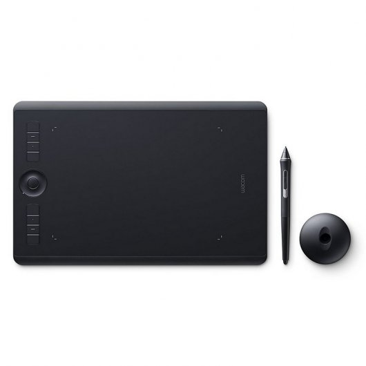

FUTURETECH STORE |
|  |
Wacom Intuos Pro M
347€
Wacom Intuos Pro ofrece un control creativo natural como nunca antes se ha visto. La combinación de la extraordinaria sensibilidad a la presión del Wacom Pro Pen 2 con el nuevo diseño elegante de la tableta se traduce en algo realmente increíble, tanto por su apariencia y como por las sensaciones que da. Si decides empezar tus proyectos sobre papel, Wacom Intuos Pro Paper Edition transformará completamente tu forma de trabajar digitalizando automáticamente tus bosquejos mientras dibujas sobre el papel. ¿Estás listo para descubrir algo realmente revolucionario?
Papel digital: trabajar de la forma más novedosa y tradicional: Cada artistas, cada diseñador y cada ilustrador tienen su propia forma de trabajar. Algunos trabajan única y exclusivamente en un entorno digital. En cambio, otros prefieren empezar su flujo de trabajo sobre papel. Con Wacom Intuos Pro podrás disfrutar de ambas formas de trabajar.
Flujo de trabajo digital sobre papel: Wacom Intuos Pro Paper Edition te permite elegir cómo prefieres trabajar. Puedes dibujar con tinta en tu papel preferido con nuestro lápiz Finetip Pen de 0,4 mm y capturar cada trazo en tiempo real, listo para editar en tu software favorito. No necesitas estar conectado a un ordenador ni a Internet. Puede almacenar hasta 200 bosquejos y estará lista para sincronizarlos con la aplicación Wacom Inkspace.
También puedes conectar tu tableta Wacom Intuos Pro Paper Edition al ordenador y trabajar en un entorno digital de principio a fin con nuestro Wacom Pro Pen 2 sensible a la presión, de la misma manera que con la tableta Wacom Intuos Pro.
Directo al flujo de trabajo digital: Conecta la Wacom Intuos Pro al Mac o PC Windows con USB o Bluetooth integrado, instala los controladores y estarás listo para comenzar a trabajar directamente en el software de tu elección. Haz bosquejos con el nuevo Wacom Pro Pen 2 en la superficie de dibujo personalizable* y mira como tus magníficas creaciones toman vida en la pantalla.
Nuevo Wacom Pro Pen 2: una extensión de tu mano:: El nuevo Wacom Pro Pen 2 se convertirá al instante en tu herramienta creativa favorita. Gracias a una sensibilidad a la presión y un control impresionantes, se convertirá en el complemento ideal de tu mano.
Características
Conecta la Intuos Pro Medium a tu Mac o Windows PC a través USB o Bluetooth y descubre todas las novedades que darán un empuje a tu flujo de trabajo
Wacom Pro Pen 2, sensible a la presión hasta 8192 niveles, representa la extensión de tu creatividad, tan natural que es difícil entender donde termina la mano y empieza el bolígrafo
El menú radial, el touch ring, las teclas del bolígrafo y los expresskeys te ofrecen atajos rápidos y sencillos
Los controles táctiles te permiten zoomar, seleccionar y navegar con una pequeña presión de los dedos
Especificaciones
Requisitos del sistema
Sistema operativo Windows soportado: Windows 10 Education,Windows 10 Education x64,Windows 10 Enterprise,Windows 10 Enterprise x64,Windows 10 Home,Windows 10 Home x64,Windows 10 Pro,Windows 10 Pro x64,Windows 7 Enterprise,Windows 7 Enterprise x64,Windows 7 Home Basic,Windows 7 Home Basic x64,Windows 7 Home Premium,Windows 7 Home Premium x64,Windows 7 Professional,Windows 7 Professional x64,Windows 7 Starter,Windows 7 Starter x64,Windows 7 Ultimate,Windows 7 Ultimate x64,Windows 8,Windows 8 Enterprise,Windows 8 Enterprise x64,Windows 8 Pro,Windows 8 Pro x64,Windows 8 x64,Windows 8.1,Windows 8.1 Enterprise,Windows 8.1 Enterprise x64,Windows 8.1 Pro,Windows 8.1 Pro x64,Windows 8.1 x64
Compatible con Mac: Si
Sistema operativo MAC soportado: Mac OS X 10.10 Yosemite,Mac OS X 10.11 El Capitan,Mac OS X 10.12 Sierra
Puertos e Interfaces
Versión de Bluetooth: 4.2
Cantidad de puertos USB 2.0: 1
Peso y dimensiones
Ancho: 338 mm
Profundidad: 219 mm
Altura: 8 mm
Peso de tableta: 700 g
Detalles técnicos
Color del producto: Negro
Ángulo de inclinación: -60 - 60°
Aprobaciones reguladoras
Certificación: US: FC, CEC (California Energy Commision), RBRC, Mercury Labeling Requirements \nCanada: IC, ENERGY EFFICIENCY STANDARDS REGULATION \nColombia: Commission de Regulacion de Telecomunicaciones \nCosta Rica: SUTEL \nPanama: Autoridad Nacional de los Servicios Públicos\nUruguay: URSEC \nGuatemala: SIT\nNicaragua: Telcor \nEl Salvador: Superintendencia General de Electricidad y Telecomunicaciones \nBolivia: SITTEL\nDominican Republic: INDOTEL \nTrinidad and Tobago: TATT\nEU/EEA/SW/Turkey: CE, RoHS \nKuwait: Ministry of Communications \nJapan: VCCI, Radio Act \nChina: SRRC (CMIIT), China RoHS, GB \nAustralia/New Zealand: RCM, IDA \nSingapore: IDA
Acorde RoHS: Si
Contenido del embalaje
Cables incluidos: USB
Guía de configuración rápida: Si
Retenedor de pluma: Si
Número de puntas de rotuladores: 10
Pinzas para rellenar: Si
Tableta
Tecnología de conectividad: Alámbrico/Inalámbrico
Resolución: 5080
Área de trabajo: 224 x 148 mm
Interfaz del dispositivo: USB/Bluetooth
Tipo de entrada de tableta: Pluma
Número de teclas programables: 8
Pluma
Bolígrafo incluido: Si
Pluma inalámbrica: Si
Nivel de presión: 8192
Pluma libre de batería: Si
Ratón
Ratón incluido: No
|


{kind=link}
{kind=link}
{kind=link}